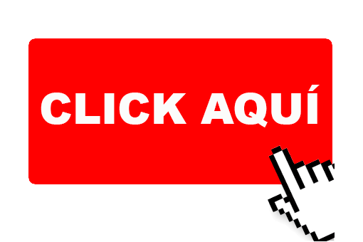
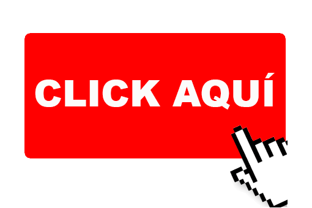

Apellidos: Miguel Molinero
Fecha de nacimiento: 22/11/1997
Lugar de nacimiento: Clínica Belén, Madrid
Domicilio: C/Joaquín Blume, Móstoles, Madrid
Código postal: 28935
Teléfono: 626335251
Github: 
E-mail: i.miguel.molinero.2016@gmail.com
Nombre: Iván
Apellidos: Miguel Molinero
Fecha de nacimiento: 22/11/1997
Lugar de nacimiento: Clínica Belén, Madrid
Domicilio: C/Joaquín Blume, Móstoles, Madrid
Código postal: 28935
Teléfono: 626335251
Github: 
E-mail: i.miguel.molinero.2016@gmail.com 
Educación primaria: C.E.I.P Pío Baroja (2000-2009)
Educación secundaria: I.E.S Manuel de Falla (2009-2013)
Bachillerato: I.E.S Manuel de Falla (2013-2016) en la modalidad de Ciencias Sociales
Estudios universitarios: Universidad Rey Juan Carlos (2016-actualidad)

Actualmente: Cursando Grado en Ingeniería de Sistemas Audiovisuales y Multimedia
Aquí iría mi experiencia profesional si tuviese una
Ayudante de monitor scout y tiempo libre